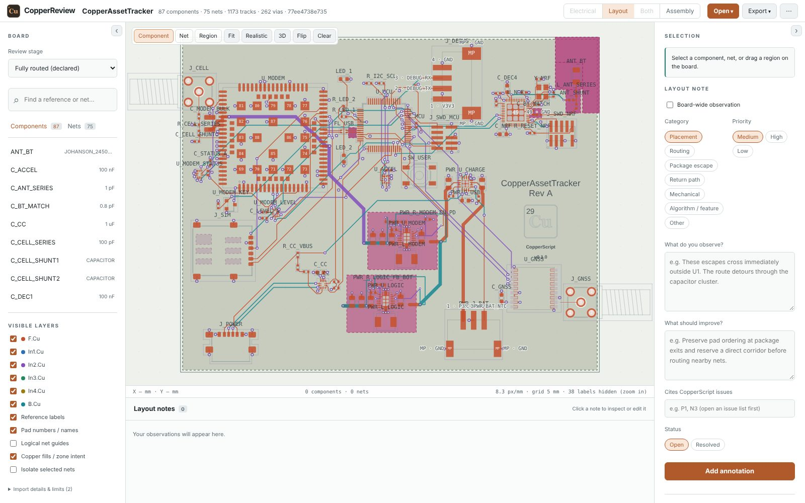

OPEN SOURCE · PCB DESIGN AS CODE
Hardware intent.
Written in code.
Describe the connections. Preserve the engineering intent. Inspect the path from readable source to placed components and routed copper.
CopperScript is a typed language and compiler for PCB design, with electrical checks, versioned libraries, full-wave antenna synthesis, native manufacturing files and KiCad export.
Route eight crossing signals around a keepout in your browser. Edit the source and inspect computed tracks, vias and layers.
 B.Cu
B.Cu In2.Cu
In2.Cu F.Cu
F.Cu02 / THE LANGUAGE
A circuit has more
to say than wires.
A capacitor protects a particular pin. A switching converter has a critical current loop. A radio needs reference geometry and a return path.
CopperScript puts connections and supported engineering intent in the same version-controlled source. Reusable parts and circuits carry their own interfaces and requirements.
Read the language referencecomponent C_MCU: CAPACITOR {
value = 100nF;
footprint = "Capacitor_SMD:C_0402_1005Metric";
role = decoupling;
decouples = "U_MCU.VDD";
}A relationship, not just a value.
The pin association survives compilation and informs generic decoupling placement and surface-feed decisions.
Excerpt from the tracker composition, not a complete board.
03 / REUSABLE PHYSICAL MACROS
Reuse deliberate physical layouts.
A hard macro packages a physical realization for an electrical module or component set: exact footprints and poses, copper, ports and protected regions. The unit is placed and routed as a rigid block while its owner geometry stays intact.
Hard macros are now authored and exported from libraries in CopperScript’s native .copper syntax. Board source imports a named definition and binds its members and nets explicitly; a generated JSON asset is optional.
physical_macro LINK: layouts.TestLayout {
member chip = U1;
member passive = R1;
net signal = SIGNAL;
}One reusable layout, explicit board mapping.
The electrical module remains authoritative; the macro supplies its pinned physical realization.
The binding is from the runnable language example. Hard-macro routing remains experimental; these definitions do not establish RF, power, assembly or production qualification.
04 / ANTENNA SYNTHESIS
Declare the band.
Synthesize the copper.
Reserve a board-edge region, name the ground and the band. A full-wave model of the board tunes the trace and its matching network.
constraint antenna(ANT1.FEED) {
name = "bt";
x = 18mm; y = 0mm;
width = 22mm; height = 6mm;
ground = GND;
bands = "2400 MHz-2483.5 MHz";
track_width = 1mm;
// pasted from copper synthesize-antenna
geometry = "monopole height=5.3mm length=22.66mm";
tuned_for = "sha256:0198a990…1ad8";
}The geometry is bound to the board it was tuned on.
The digest covers the outline, stack-up, ground zone, region, track rules, feed and band. Change one and the board stops compiling until synthesis is re-run.
From the antenna synthesis example, a synthetic two-component probe board. The digest is shortened here.
The figure draws the recorded copper and curves with JavaScript. The numbers are below and in antenna-synthesis.json.
Show the curve as a table
From a quarter-wave guess to a tuned trace.
Without a geometry, the compiler lowers a first-order quarter-wave template. On the fine full-wave mesh it resonates at 2.73 GHz, 12 % above the band centre, and misses the −10 dB target even with a match, because its permittivity assumes ground under the trace. copper synthesize-antenna tunes the resonance on the pinned pure-Rust FDTD solver, polishes height and length with Nelder-Mead, fits an L-section match and verifies the result on a fine mesh with radiation efficiency.
The antenna lowers to a generated hard macro: locked copper, a region that blocks tracks, vias and fill on every layer, and the feed pad as its one port. Monopole, meander and inverted-F topologies are searched parametrically; a pixel topology uses a genetic algorithm.
One model of the board: other components, the enclosure and cables are not in it, ground layers are assumed stitched and matching parts are ideal. Bench tuning in the final enclosure and radiated and regulatory testing remain mandatory.
Read the synthesis research note ↗05 / THE WORKFLOW
Follow every transformation.
Generated artifacts stay inspectable.
Missing evidence stays visible.
- 01
Describe
Components, peripheral selection, nets, supply domains and physical constraints in
Source + pinned libraries.copper. - 02
Check & resolve
Compile electrical intent, check rules and resolve real footprints and supported physical constraints.
Electrical + physical IR - 03
Place & route
Combine constraint-aware placement, native .copper hard macros and synthesized antennas through the bounded experimental pipeline.
KiCad board + reports - 04
Fill, check & plot
Fill zones, run DRC and plot Gerbers and drills natively, or hand the same board to KiCad as an independent check.
Manufacturing files + manifest - 05
Review & qualify
Review schematic and layout in CopperReview, then collect board-specific RF, power, assembly and prototype evidence.
A separate release decision
06 / A REAL DESIGN
From source to
a cellular asset tracker.
STM32 host. LTE Cat-1 bis. GNSS.
Bluetooth and motion sensing.
A rechargeable, six-layer routing review.


Routed, filled, checked and plotted without KiCad.
The 6 November 2026 showcase routes the current source, with its named .copper macro definitions, using native plane verification: all 60 ordinary nets connected, 262 vias. The native DRC of the filled board reports zero violations and zero unconnected items, and reading the plotted Gerbers and drills back against the netlist finds no shorts or opens. The native DRC does not check courtyards, silkscreen, solder-mask bridges or length rules; 12 electrical-requirement checks remain blocked. No independent CAM or manufacturing export was made.
Every view is drawn by copper render from the native Gerber plot, viewed from above without mirroring. Gold is exposed copper, inside the solder-mask openings; in placement it is the openings themselves. The combined view is plotted before zone fill. The showcase has not been approved for production or ordering.
RF/USB requirement verification, supplier availability, assembly-placement review and prototype validation remain incomplete. A clean native DRC is not release approval.
Read current board status ↗07 / REVIEW IN THE BROWSER
Inspect the design.
Tell the next run what to fix.
CopperReview opens a board, its schematic and its assembly lock in the browser. It runs the same Rust compiler as WebAssembly, so nothing is installed and sources stay on your computer.



- Schematic, power and busesGenerated from the compiled electrical IR. Side by side with the board, selecting a part or net on one side selects it on the other.
- Notes for the solverAttach observations to components, nets and regions, cite
copper issuesfindings and export a review the next LLM-assisted run can read. - 3D and assemblyKiCad's 3D models or generated bodies, and an Assembly mode that walks a manual build part by part from
assembly.lock.
Screenshots of CopperReview with the showcase board above and its compiled IR. The viewer is read-only: notes never edit the PCB or its constraints.
08 / GET STARTED
Start with a small circuit.
Check and compile the included sensor-board example before trying a full physical workflow.
Requires Git and the Rust toolchain (rustup installs the pinned version). KiCad is optional: CopperScript fills zones, checks design rules and plots Gerbers itself. KiCad 10 remains available as an independent refill and DRC check.
git clone https://github.com/andenore/CopperScript.git
cd CopperScript
cargo install --locked --path crates/copper
copper agent-guide
copper check examples/valid_board/board.copper
copper compile examples/valid_board/board.copper -o build/board.jsonProduces electrical IR in build/board.json. This first example is a compiler fixture; it does not produce a fabrication-ready PCB.
09 / PRACTICAL QUESTIONS
Before you dive in.
Do I need KiCad?
No. copper fill, copper drc and copper plot fill zones, check design rules and write Gerber X2, Excellon, IPC-D-356A and position files without it, and export-manufacturing --drc native --plotter native runs that path end to end. The native DRC is narrower than KiCad's and lists what it does not check in every report. Boards still export as native KiCad projects, with their footprints and 3D models; KiCad's refill and DRC remain the default release gate, and copper compare-cam compares the two plots. Read the manufacturing guide.
Will a synthesized antenna work on my board?
Synthesis tunes the trace in a full-wave model of your outline, stack-up, ground zone and region, so it starts much closer than a textbook length. It is still simulation evidence for one model: nearby components, the enclosure and cables are not in it. Fit the matching parts, then tune and test on the assembled board. Read the antenna reference.
Can an LLM design a board with it?
Agents can read and write the same source, start with copper agent-guide, retrieve selected library contracts and inspect compact reports. Generated designs still need the project's checks and engineering review. Guidance does not qualify a design.
Is the router ready for every board?
The router is experimental. The tracker is a documented example of the shared bounded placement, routing and native-feedback workflow. Success on this candidate is not a guarantee for another design.
What belongs in the language, library or board?
CopperScript owns generic language and compiler algorithms. CopperLib owns reusable definitions and engineering contracts. A board repository owns application composition, configuration and qualification evidence.
10 / THE ECOSYSTEM
Four repositories.
One inspectable workflow.
Explore the source. Try an example.
Report what worked and what needs work.
CopperScript
The language, compiler, electrical checks, placement, routing and KiCad export.
CopperLib
Versioned parts, footprints, interfaces, reusable circuits and engineering contracts.
CopperReview
Schematic, layout and 3D review in the browser, notes for the next solver iteration and an Assembly mode for a manual build. Runs the compiler as WebAssembly.
CopperAssetTracker
The board composition, exact candidate selections and board-specific review evidence.